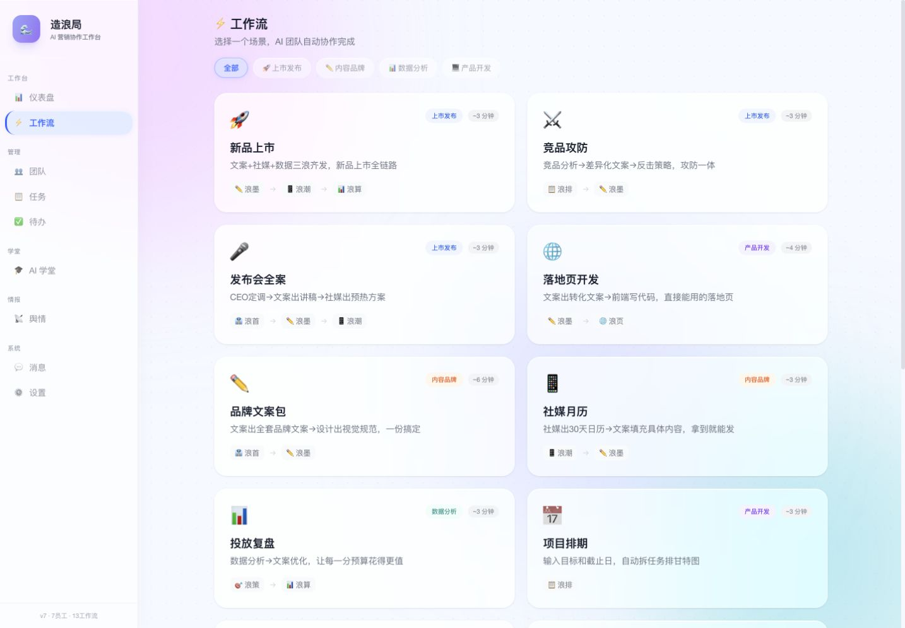

Selected Work
02 / Independent Live Product / AI × Marketing
造浪局
AI-powered Marketing Workflow
把市场信号、营销任务与 AI 协作放进一个可运行的工作台，减少重复整理和跨工具切换。
View Live Product
01 / Problem
营销工作的问题，常常不是缺工具。
市场信息散落在 UGC、媒体评测、竞品发布和团队沟通中。整理过程重复、跨工具切换频繁，反馈也很难稳定转成策略输入。
我把问题定义为一条工作流，而不是再增加一个聊天窗口。
02 / Product Thinking
把输入、AI 处理和营销输出连接起来。
Input
- UGC
- Media Reviews
- Competitor Information
- User Feedback
- Market Signals
AI Processing
- Search
- Classification
- Summarization
- Pain-point Extraction
- Comparison
Output
- Consumer Insight
- Market Trend
- Marketing Opportunity
- Content Input
- Strategy Input
03 / Real Product
不是概念稿，而是可以进入的产品。
当前版本包含 Dashboard、Workflows、Team、Tasks、Todos、AI School、Sentiment、Messages 与 Settings。审计时可见 7 位 AI 员工和 13 个工作流。

04 / Selected Workflows
用少数代表流程说明产品边界。
- 新品上市
- 竞品攻防
- 发布会全案
- 舆情研判
05 / Boundary
AI 提高整理与协作效率，不替代判断。
造浪局负责组织信息、生成中间产物和推动任务流转。市场判断、事实核验、优先级与最终决策仍由人完成。